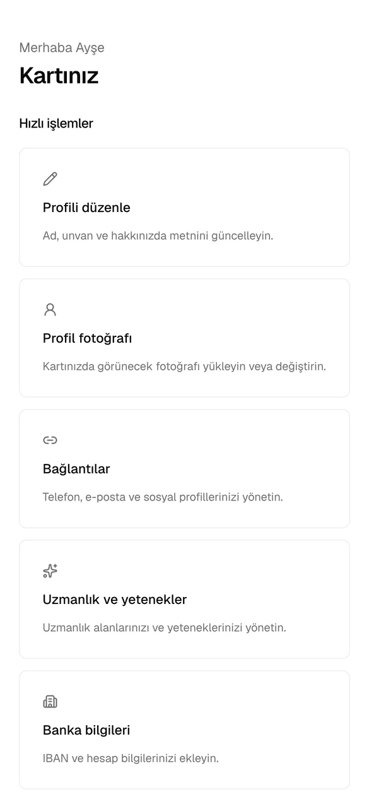
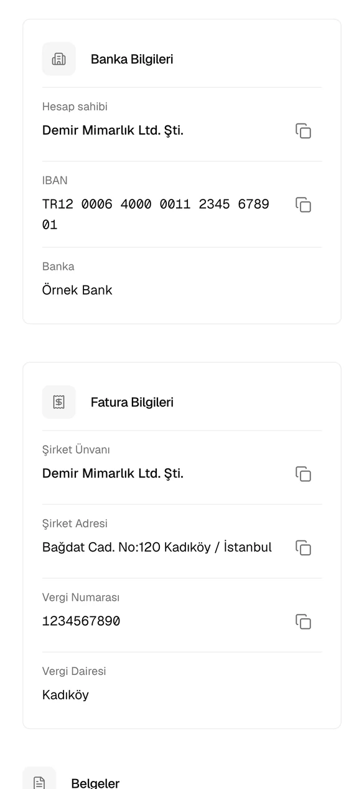
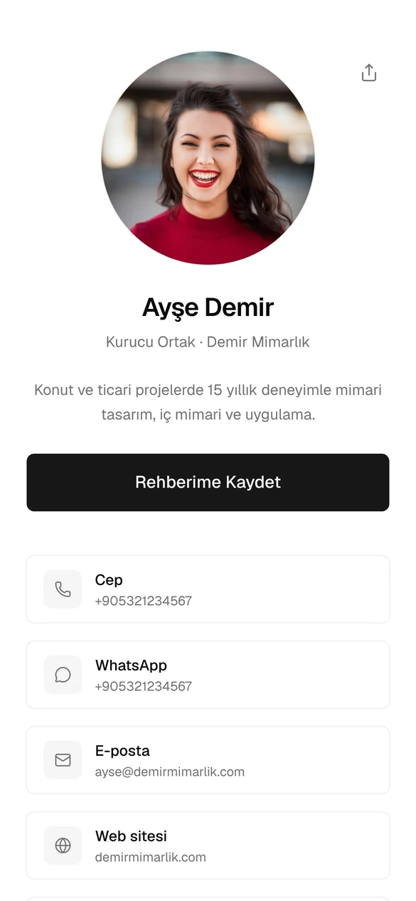

Hesabınızı açmaktan kartınızı ilk kez okutmaya kadar, panelde doldurduğunuz her alanın ne işe yaradığı ve nasıl doldurulacağı.
Kartınızın çalışması için gereken en kısa yol. Ayrıntılar sonraki bölümlerde.
Dijivizit hesabı davetle açılır. Kart siparişinizle birlikte size DIJI-XXXX-XXXX-XXXX biçiminde bir davet kodu ya da kodun içine işlendiği bir kayıt bağlantısı gönderilir.
| Alan | Ne yazılır | Kural |
|---|---|---|
| Ad soyad | Kartınızda görünecek adınız. Sonradan değiştirebilirsiniz. | ZORUNLU 2–120 karakter |
| E-posta | Giriş ve bildirimler için kullanacağınız adres. | ZORUNLU geçerli e-posta |
| Davet kodu | Size gönderilen kod. Kayıt bağlantısıyla geldiyseniz otomatik dolar. | ZORUNLU büyük/küçük harf fark etmez |
| Parola | En az 8 karakter. Harf, rakam ve işaret karıştırın. | ZORUNLU 8–72 karakter |
| Onay kutusu | KVKK Aydınlatma Metni ve Kullanım Koşulları onayı. | ZORUNLU |
Ardından Hesap oluştur’a basın. E-postanıza bir doğrulama bağlantısı gelir; tıklayınca hesabınız açılır. Gelmezse spam klasörüne bakın ya da Doğrulama e-postasını yeniden gönder’e basın. Adresi yanlış yazdıysanız E-postayı değiştir ile düzeltebilirsiniz.
Davet kodunuz yoksa ya da çalışmıyorsa: merhaba@dijivizit.com.
Giriş yaptığınızda açılan ana sayfa. Kartınızla ilgili her şeye buradan ulaşırsınız.
Panelin altındaki kutular sizi ilgili sayfaya götürür: Kişiler, Kartlarım, Ekip, Profili düzenle, Profil fotoğrafı, Bağlantılar, Uzmanlık ve yetenekler, Banka bilgileri, Fatura bilgileri, Belgeler, Analitik, Paylaş, Profili aç.
Bugün takip edilecekler kutusu yalnızca hatırlatma tarihi gelen kişiler varsa görünür (Bölüm 14).

Kartınızın üst kısmında görünen bilgiler. Kaydet düğmesi yalnızca bir değişiklik yaptığınızda etkinleşir.
| Alan | Ne yazılır, nerede görünür | Kural |
|---|---|---|
| Ad soyad | Kartta büyük başlık olarak, rehbere kaydedilirken ad ve soyad olarak. Örn. Ayşe Demir. | ZORUNLU 2–120 |
| Unvan | Adınızın altında. Örn. Kurucu Ortak, Satış Müdürü. Rehbere “iş unvanı” olarak geçer. | en fazla 120 |
| Şirket | Unvanın yanında “Unvan · Şirket” olarak. Rehbere “şirket” olarak geçer. | en fazla 120 |
| Adres | Kartta “Adres” satırı olarak görünür; dokununca harita açılır. Rehbere de eklenir. Sokak, mahalle, ilçe/şehir, ülke sırasıyla yazın. | en fazla 500 |
| Hakkımda | Adınızın altındaki kısa tanıtım. 1–3 cümle idealdir. Örn. Konut ve ticari projelerde 15 yıllık deneyimle mimari tasarım. | en fazla 5000 |
| Bölüm başlığı | Uzmanlık listenizin kartta hangi başlıkla görüneceği: Uzmanlık Alanları ya da Yetenekler. | varsayılan: Uzmanlık Alanları |
Sayfanın üstündeki bağlantılarla fotoğraf, iletişim bağlantıları ve uzmanlık sayfalarına geçebilirsiniz.
Kartınızdaki dokunulabilir iletişim satırları. En fazla 20 bağlantı ekleyebilirsiniz. Önce Platform’u seçin; değer alanının adı ve örneği seçtiğiniz platforma göre değişir.
| Platform | Ne yazılır | Kartta dokununca |
|---|---|---|
| Telefon | Numaranız. Örn. +90 532 000 00 00. Boşluk ve tire kullanabilirsiniz. | Arama başlar |
| WhatsApp’ta kullandığınız numara, ülke koduyla. Örn. +90 532 000 00 00. | WhatsApp sohbeti açılır | |
| E-posta | E-posta adresiniz. | Yeni e-posta açılır |
| Web sitesi | Adresiniz. https:// yazmasanız da eklenir. | Site açılır |
| Yalnızca kullanıcı adınız (linkedin.com/in/ sonrası). Tam bağlantıyı yapıştırırsanız da tanınır. | Profiliniz açılır | |
| Kullanıcı adınız (@ olmadan da olur) ya da profil bağlantınız. | Profiliniz açılır | |
| X | Kullanıcı adınız ya da profil bağlantınız. | Profiliniz açılır |
Satırda platform adı yerine görünecek kısa ad. Örn. Cep, İş, Ofis, Kişisel. Birden fazla telefon ya da e-posta eklediğinizde hangisinin ne olduğunu ayırt etmeyi sağlar ve rehbere de bu etiketle kaydedilir. En fazla 60 karakter.
Yalnızca WhatsApp ekleyip telefon eklemezseniz, rehbere kaydederken WhatsApp numaranız telefon olarak kullanılır. Adres bir bağlantı değildir; Profili düzenle’deki Adres alanından gelir.
Kartın alt kısmında etiketler halinde görünen kısa liste. En fazla 20 öğe.
| Alan | Ne yazılır | Kural |
|---|---|---|
| Tür | Uzmanlık Alanı ya da Yetenek. | ZORUNLU |
| Ad | Kısa ifade. Örn. Ürün Yönetimi, İç Mimari, Restorasyon. | ZORUNLU en fazla 60; aynı türde tekrar edemez |
Satırlardaki oklarla sıralayın, Düzenle ile adını değiştirin. Kartta hangi başlıkla görüneceğini Profili düzenle → Bölüm başlığı belirler.
Ödeme alacağınız hesabı kartınızda, kopyalanabilir şekilde göstermek için. Bir hesap eklenebilir.
| Alan | Ne yazılır |
|---|---|
| Hesap sahibi ZORUNLU | Hesabın adına kayıtlı olduğu kişi ya da şirket, bankadaki yazımıyla. |
| IBAN ZORUNLU | TR ile başlayan 26 karakter. Boşluklu yazabilirsiniz; sistem düzenler. |
| Banka adı | Türk IBAN’larında otomatik bulunur. Bulunamazsa listeden seçin. |

Size fatura kesecek ya da sizinle çalışacak kişilerin istediği vergi bilgileri. Dört alanın hepsi zorunludur.
| Alan | Ne yazılır | Kural |
|---|---|---|
| Şirket Ünvanı | Vergi levhasındaki tam ünvan. Örn. Demir Mimarlık Ltd. Şti. | 2–200 |
| Şirket Adresi | Fatura adresi, levhadaki gibi. | 2–500 |
| Vergi Numarası | Şirketler için 10 haneli VKN, şahıs şirketleri için 11 haneli TCKN. Yalnızca rakam. | 10 ya da 11 hane |
| Vergi Dairesi | Bağlı olduğunuz vergi dairesi. Örn. Kadıköy. | 2–120 |
Banka bilgilerinde olduğu gibi, kartta görünmesi için kaydettikten sonra Kartımda göster’i açın. Ziyaretçi her satırı tek dokunuşla kopyalayabilir.
Katalog, fiyat listesi, özgeçmiş, sunum gibi dosyaları kartınıza ekleyin; ziyaretçi dokununca telefonunda açılır. En fazla 10 belge.
| Alan | Ne yazılır | Kural |
|---|---|---|
| Belge türü | Özgeçmiş, Ürün Kataloğu, Fiyat Listesi, Broşür, Sunum, Teknik Doküman, Diğer. | ZORUNLU |
| Başlık | Kartta görünecek ad. Örn. Proje Kataloğu 2026. | ZORUNLU en fazla 200 |
| Açıklama | Başlığın altında kısa not. Örn. Seçili konut ve ofis projeleri. | en fazla 500 |
| PDF dosyası | Dosya seç ile seçin, Belgeyi yükle’ye basın. | ZORUNLU yalnızca PDF, en fazla 10 MB |
Profili aç kutusu, kartınız taslaktayken sizi önizleme sayfasına götürür: ziyaretçilerin yayından sonra göreceği görünüm. Önizlemede görüntülenme sayılmaz; “Rehberime Kaydet” ve paylaş menüsü devre dışıdır. Kart yayındayken aynı kutu gerçek kartınızı açar.
NFC’si olmayan ya da kapalı telefonlarda kartın arkasındaki QR kodu kamerayla okutun. Ayrıca Paylaş sayfasından QR kodunuzu PNG indir / SVG indir ile indirip broşür, sunum, fuar standı ya da e-posta imzasında kullanabilirsiniz. SVG baskı için, PNG ekran için uygundur.
Paylaş → Bağlantıyı kopyala ile kartınızın adresini WhatsApp, e-posta ya da sosyal medyada gönderin. Bu adres hiç değişmez; bilgilerinizi güncellediğinizde aynı bağlantı yeni bilgileri gösterir.
Kartlarım sayfasında Apple Cüzdan’a ekle düğmesi görünüyorsa kartınızı iPhone’unuzun Cüzdan uygulamasına ekleyebilirsiniz. Fiziksel kart yanınızda değilken Cüzdan’daki QR’ı gösterin, karşınızdaki okutsun.
Kartınız okutulduğunda yukarıdan aşağıya:
| Kaydedilir | Kaydedilmez |
|---|---|
| Ad soyad, şirket, unvan; tüm telefonlar ve e-postalar (etiketleriyle); adres; web siteleri; LinkedIn, Instagram, X, WhatsApp bağlantıları; kartınızın Dijivizit bağlantısı | Fotoğraf, Hakkımda, uzmanlıklar, banka ve fatura bilgileri, belgeler, gizlediğiniz bağlantılar |

Kartınızı okutan kişi Bilgilerimi bırak’a basıp adını, telefonunu ve/veya e-postasını, isterse şirketini ve bir not bırakabilir (paylaşım onayı zorunludur). Bu kişi Kişiler listenize Karttan etiketiyle düşer ve size e-posta gelir; e-postayı yanıtlarsanız doğrudan o kişiye gider.
| Alan | Ne yazılır | Kural |
|---|---|---|
| Ad soyad | Kişinin adı. | ZORUNLU 2–120 |
| Telefon / E-posta | En az biri. Türk numaraları otomatik +90 biçimine çevrilir; yurt dışı numaraları + ile başlatın. | EN AZ BİRİ |
| Şirket, Unvan | Kişinin çalıştığı yer ve görevi. | en fazla 120 |
| Nerede tanıştınız | Örn. İstanbul Mobilya Fuarı. Aylar sonra hatırlamanızı sağlar. | en fazla 120 |
| Etiketler | Virgülle ayırın: müşteri, tedarikçi, fuar. Listede bu etiketlerle filtreleyebilirsiniz. | en fazla 10 etiket |
Listede isim, şirket, telefon ya da e-postayla arayın, etiketlere göre süzün. CSV indir tüm kişileri Excel’de açılan bir dosya olarak indirir.
Fotoğraf yalnızca okunmak için işlenir, saklanmaz. “Bilgi bulunamadı” uyarısı alırsanız daha yakından ve net çekin.
Kartınızın kaç kez açıldığını (toplam, bugün, bu hafta, bu ay) ve ziyaretçilerin neye dokunduğunu gösterir: telefon, WhatsApp, e-posta, web sitesi, LinkedIn, belge görüntüleme, rehbere kaydetme (vCard indirme), adres/harita, paylaş menüsü, bağlantı kopyalama, QR kod. Aynı kişinin 30 dakika içindeki tekrarları bir kez sayılır. Veriler 13 ay saklanır.
Ana bağlantınız her zaman profilinizi açar ve değişmez. Bunun yanında ofis kartı, yedek kart, fuar standı QR’ı gibi en fazla 10 ek kart oluşturabilirsiniz; her birinin ayrı bağlantısı ve ayrı istatistiği olur.
Şirketinizin size verdiği kartlar ayrı bir başlık altında görünür; bunları ekip yöneticiniz yönetir.
Şirketler için: tüm çalışan kartlarını tek yerden yönetin. Çalışan ayrıldığında fiziksel kart aynı kalır; yalnızca kartın kimin profilini açacağını değiştirirsiniz.
Çalışan ayrıldığında ilgili kartta Kimin profilini açsın seçimini yeni kişiyle değiştirin. Kart anında yeni kişinin profilini açar. Ekipten çıkarılan ya da ayrılan kişinin şirket kartları otomatik olarak boşa düşer.
| Yetki | Sahip | Yönetici | Üye |
|---|---|---|---|
| Üye davet etme, rol değiştirme, üye çıkarma, ekip adını değiştirme | ✓ | ✓ | – |
| Şirket kartı oluşturma, atama, açma/kapama, silme | ✓ | ✓ | – |
| Şirket kartlarından gelen kişileri ve üye istatistiklerini görme | ✓ | ✓ | – |
| Ekibi silme | ✓ | – | – |
| Üye listesini görme, kendisine atanan kartı kullanma, ekipten ayrılma | ✓ | ✓ | ✓ |
Ekipte her zaman en az bir Sahip kalmalıdır. Şirket kartına bırakılan kişileri hem kartı taşıyan üye hem de yöneticiler görür.
| Durum | Çözüm |
|---|---|
| Kart okutulunca “Kart bulunamadı” çıkıyor | Panelim’de Herkese açık profil anahtarını açın. Ek kart kullanıyorsanız Kartlarım’da kartın Açık olduğundan, şirket kartıysa birine atandığından emin olun. |
| Telefon kartı okumuyor | Telefonun kilidini açın. iPhone’da kartı üst kenara, Android’de arka yüzün ortasına tutun ve NFC’nin açık olduğundan emin olun. Kalın ya da metal kılıf okumayı engelleyebilir. Olmazsa QR’ı okutun. |
| IBAN veya fatura bilgileri kartta yok | İlgili sayfada Kartımda göster’i açın. |
| Bir bağlantı kartta görünmüyor | Bağlantılar’da Kartta göster işaretli mi, değişiklikten sonra Kaydet’e basıldı mı kontrol edin. |
| Belge kartta yok | Belgeler’de anahtarın Aktif olduğunu kontrol edin. |
| Fotoğraf yüklenmiyor | Dosya JPEG, PNG ya da WebP ve 2 MB’dan küçük olmalı. |
| Doğrulama ya da sıfırlama e-postası gelmedi | Spam klasörüne bakın; birkaç dakika sonra yeniden gönderin. |
| Bilgileri değiştirdim, kartta eskisi görünüyor | Kaydettiğinizden emin olun ve sayfayı yenileyin. Daha önce rehbere kaydedilmiş bilgiler kişinin telefonunda kendiliğinden güncellenmez; yeniden kaydetmesi gerekir. |
| Öğe | Sınır |
|---|---|
| Bağlantılar | 20 |
| Uzmanlık ve yetenekler | 20 öğe, her biri en fazla 60 karakter |
| Belgeler | 10 adet, yalnızca PDF, her biri en fazla 10 MB |
| Profil fotoğrafı | JPEG, PNG veya WebP, en fazla 2 MB |
| Ek kişisel kart | 10 |
| Şirket kartı | Ekip başına 500, tek seferde 50 |
| Kurulabilecek ekip | Kişi başına 3 |
| Kişiler | 5000; kişi başına 10 etiket |
| Ekip daveti | 14 gün geçerli |
talep@dijivizit.com
0540 626 19 65 (telefon ve WhatsApp)
Osmangazi Mah. Basın Şehitleri Cad. No:174
Odunpazarı / Eskişehir
dijivizit.com · app.dijivizit.com